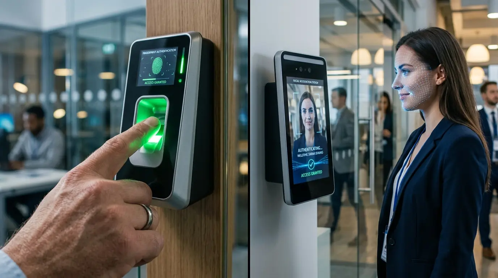
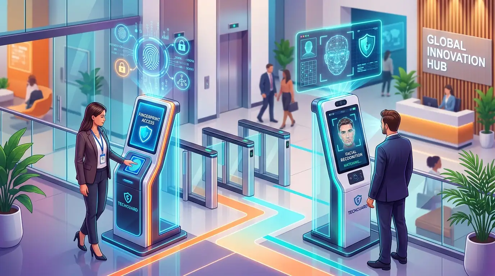

Bandingkan Mesin Absensi Sidik Jari (Fingerprint) vs Deteksi Wajah (Face ID)
Memilih mesin absensi sidik jari vs wajah bergantung pada skala tim, higienitas, dan anggaran kantor: sidik jari ekonomis untuk tim kecil, sedangkan face recognition unggul cepat dan higienis.


Penerapan mesin absensi biometrik sidik jari dan face ID pada lobi kantor untuk meningkatkan akurasi data kehadiran karyawan serta integrasi software payroll.
Efisiensi pencatatan kehadiran karyawan merupakan fondasi utama dalam menjaga disiplin operasional, transparansi jam kerja, dan keakuratan kalkulasi gaji bulanan di perusahaan. Menentukan antara mesin absensi biometrik berbasis sidik jari (fingerprint) atau sensor pemindai wajah (face recognition) sering kali membingungkan manajer HRD dan bagian pengadaan (purchasing). Keduanya menawarkan eliminasi praktik titip absen manual, namun membawa karakteristik operasional, ketahanan perangkat keras, dan struktur biaya investasi yang sangat berbeda.
Berdasarkan laporan riset pasar Frost & Sullivan Biometric Office Technology Report (2025/2026), adopsi sistem absensi nirsentuh (contactless) di Asia Tenggara melonjak sebesar 42% secara tahunan, didorong oleh kebutuhan kecepatan verifikasi dan standar higienitas perkantoran. Di sisi lain, data IDC Enterprise Workplace Infrastructure Study (Q1 2026) mencatat bahwa 58% bisnis skala kecil hingga menengah (UKM) masih mempercayakan mesin sidik jari karena rasio efisiensi biaya per unit yang sangat bersahabat.
- Efisiensi Biaya Investasi: Mesin sidik jari menawarkan harga fingerprint kantor yang lebih terjangkau, cocok untuk instansi dengan alokasi anggaran terbatas.
- Kecepatan & Higienitas: Deteksi wajah (Face ID) mencatatkan verifikasi instan di bawah 0,5 detik tanpa sentuhan fisik, mencegah antrean panjang di jam sibuk.
- Ketahanan Sensor Terhadap Kondisi Fisik: Sensor wajah tidak terpengaruh oleh kondisi jari tangan karyawan yang basah, berminyak, atau sidik jari yang memudar akibat pekerjaan manual.
- Fitur Anti-Kecurangan (Anti-Spoofing): Teknologi AI Face ID terbaru mampu mendeteksi mata hidup (liveness detection) sehingga tidak bisa dimanipulasi dengan cetakan foto.
- Bagaimana Prinsip Kerja Mesin Absensi Sidik Jari vs Wajah?
- Apa Kelebihan dan Kekurangan Mesin Fingerprint?
- Mengapa Deteksi Wajah (Face ID) Menjadi Pilihan Kantor Modern?
- Tabel Perbandingan Spesifikasi Teknis & Fitur
- Berapa Perkiraan Biaya Pengadaan Mesin Absensi Kantor?
- Bagaimana Cara Menentukan Mesin Absensi yang Tepat untuk Kantor Anda?
- Pertanyaan yang Sering Diajukan (FAQ)
- Kesimpulan Praktis & Konsultasi B2B
Bagaimana Prinsip Kerja Mesin Absensi Sidik Jari vs Wajah?
Mesin sidik jari memetakan pola alur kulit tangan secara optik atau kapasitif, sedangkan sistem deteksi wajah memindai kontur geometris muka dengan sensor inframerah 3D.
Pada sistem absensi sidik jari, mesin memanfaatkan sensor optik beresolusi tinggi (umumnya 500 DPI) atau sensor semikonduktor kapasitif untuk menangkap pola garis sidik jari (minutiae points), seperti titik bifurkasi dan ujung garis. Data ini kemudian dienkripsi menjadi deretan kode biner algoritma tanpa menyimpan gambar mentah sidik jari, menjamin privasi biometrik staf tetap terlindungi.
Sementara itu, mesin absensi pengenal wajah (facial recognition system) bekerja dengan memancarkan sinar inframerah dekat (NIR) guna memindai topografi kontur wajah secara tiga dimensi. Algoritma deep learning internal mengukur jarak antarmata, bentuk tulang pipi, jembatan hidung, dan garis rahang. Hebatnya, mesin generasi mutakhir tetap mengenali wajah karyawan meskipun mengenakan kacamata, topi kerja, atau masker medis tanpa mengorbankan kecepatan otentikasi.
Apa Kelebihan dan Kekurangan Mesin Fingerprint?
Mesin absensi sidik jari sangat hemat anggaran dan praktis dipasang, namun rentan gagal pindai jika jari kotor atau kaca optik tergores.
Keunggulan utama mesin fingerprint terletak pada kematangan ekosistem teknologinya. Pabrikan telah menyempurnakan modul optik selama lebih dari dua dekade, menghasilkan perangkat yang andal dengan konsumsi daya listrik rendah (rata-rata di bawah 5 Watt). Bagi kantor rintisan (startup), cabang ritel, maupun instansi pendidikan dengan jumlah karyawan di bawah 50 orang, mesin sidik jari adalah investasi cerdas yang menawarkan Return on Investment (ROI) instan.
Namun, mesin fingerprint memiliki sejumlah keterbatasan fisik:
- Kegagalan Pemindaian (False Rejection): Staf dengan kulit telapak tangan kering, berkeringat, atau memiliki sidik jari tipis akibat sering bersentuhan dengan bahan kimia/kertas sering mengalami penolakan verifikasi berulang kali.
- Kebersihan & Transmisi Kuman: Dalam satu kantor dengan 100 karyawan, sensor kaca disentuh setidaknya 200 kali sehari, sehingga berpotensi menjadi media penyebaran bakteri flu bila tidak rutin disterilkan.
- Penurunan Performa Optik: Minyak alami kulit dan partikel debu halus yang menumpuk di atas prisma optik dapat mengurangi sensitivitas sensor seiring berjalannya waktu.
Mengapa Deteksi Wajah (Face ID) Menjadi Pilihan Kantor Modern?
Mesin absensi face ID menawarkan proses presensi instan tanpa sentuh, anti-antrean jam masuk, serta akurasi biometrik superior berkat integrasi AI.
Penerapan teknologi Face Recognition telah mentransformasi lobi perkantoran modern menjadi lingkungan yang serba higienis dan profesional. Karyawan cukup berjalan mendekati mesin dalam jarak 0,5 hingga 1,5 meter, dan kamera ganda dengan pencahayaan kompensasi otomatis akan memverifikasi identitas dalam hitungan 0,2 detik. Hal ini mengeliminasi penumpukan antrean panjang di depan pintu masuk gedung kantor menjelang jam 08.30 atau 09.00 pagi.

Perangkat mesin absensi hybrid mutakhir di PerlengkapanKantor yang menggabungkan verifikasi Face ID, sidik jari, kartu RFID, dan kontrol akses pintu otomatis (access door lock).
Kelebihan utama yang menjadikan opsi ini unggul bagi perusahaan menengah hingga korporasi besar meliputi:
- Nirsentuh (100% Contactless): Menjaga higienitas maksimal seluruh staf tanpa risiko kontaminasi silang mikroorganisme patogen pada area publik kantor.
- Kapasitas Memori Masif: Perangkat deteksi wajah kelas enterprise sanggup menampung 3.000 hingga 10.000 data template wajah dan 200.000 log transaksi kehadiran tanpa mengalami lag pemrosesan.
- Integrasi Access Control: Dilengkapi port relay elektrik untuk dihubungkan langsung dengan pintu kaca otomatis (magnetic lock / drop bolt), sehingga hanya staf berwenang yang dapat membuka pintu ruangan rapat atau server.
- Sistem Dual Kamera Anti-Manipulasi: Dilengkapi algoritma Live Body Detection yang membedakan wajah asli manusia dari rekaman video smartphone atau cetak foto resolusi tinggi.
Tabel Perbandingan Spesifikasi Teknis & Fitur
Berikut komparasi komprehensif antara teknologi pemindai sidik jari dan pengenal wajah untuk memudahkan evaluasi tim pengadaan kantor Anda.
| Parameter Penilaian | Mesin Sidik Jari (Fingerprint) | Mesin Deteksi Wajah (Face ID) |
|---|---|---|
| Metode Pemindaian | Kontak langsung jari pada prisma sensor optik/kapasitif | Nirsentuh (contactless) sensor kamera inframerah dual-lens |
| Kecepatan Verifikasi | 0,8 - 1,2 detik per pengguna | 0,2 - 0,5 detik per pengguna (bahkan saat berjalan) |
| Sensitivitas Lingkungan | Rentan terhadap debu, minyak, luka, dan jari basah | Tetap akurat pada kondisi gelap total maupun pencahayaan terang |
| Higienitas & Sanitasi | Rendah (prisma disentuh bergantian oleh seluruh tim) | Sangat Tinggi (bebas sentuhan fisik sama sekali) |
| Pencegahan Manipulasi | Sangat Baik (menggunakan pola biometrik unik biner) | Luar Biasa (dilengkapi Live Body AI Anti-Spoofing) |
| Konektivitas Data | USB Flashdisk, LAN RJ-45, TCP/IP | WiFi Nirkabel, Cloud Server, LAN, Web API, USB Direct |
| Integrasi Pintu (Door Access) | Tersedia pada tipe profesional mid-tier | Standar bawaan (built-in relay controller) |
| Kisaran Biaya Hardware | Ekonomis (Mulai Rp450.000 - Rp1.500.000) | Kompetitif Menengah (Mulai Rp1.200.000 - Rp3.800.000) |
| Skala Kantor Ideal | Tim 5 - 40 orang / Cabang Toko Mandiri | Tim 30 - 500+ orang / Gedung Korporat / Pabrik |
Berapa Perkiraan Biaya Pengadaan Mesin Absensi Kantor?
Investasi pengadaan mesin absensi berkisar dari Rp450 ribuan untuk fingerprint standalone hingga Rp3 jutaan untuk unit multi-biometrik cloud bergaransi.
Saat merencanakan anggaran belanja modal (capex) untuk teknologi kantor, tim purchasing perlu memperhitungkan tidak hanya harga fisik unit perangkat keras, melainkan juga paket pendukung seperti lisensi aplikasi absensi, bracket pemasangan dinding, power supply cadangan (UPS internal), dan garansi purnajual.
Di PerlengkapanKantor, kami menyediakan paket pengadaan mesin absensi B2B lengkap dengan lisensi software absensi tanpa biaya langganan bulanan tersembunyi (one-time purchase), garansi resmi ganti sparepart 1-2 tahun, serta kabel instalasi standar. Bagi kantor yang membutuhkan solusi absensi face id murah dengan performa stabil, unit hybrid generasi terkini mampu menampung kombinasi 1.000 wajah, 3.000 sidik jari, dan 10.000 kartu RFID hanya dengan harga berkisar Rp1.350.000-an.
Bagaimana Cara Menentukan Mesin Absensi yang Tepat untuk Kantor Anda?
Pilihlah fingerprint untuk kantor kecil berpola kerja statis, dan pilih face ID untuk tim besar, lingkungan medis/manufaktur, serta kantor berestetika modern.
Untuk memastikan Anda mengalokasikan anggaran kantor dengan tepat sasaran, pertimbangkan empat parameter praktis berikut:
- Karakteristik Pekerjaan Staf: Jika kantor Anda bergerak di bidang logistik, bengkel, dapur komersial, atau manufaktur ringan di mana tangan staf sering terkena debu dan cairan, sistem deteksi wajah adalah keharusan mutlak untuk mencegah kendala gagal absen harian.
- Kapasitas Lalu Lintas Jam Masuk: Jika terdapat lebih dari 50 orang yang datang dalam rentang waktu sempit 15 menit, kecepatan pemindaian 0,2 detik dari kamera Face ID akan menghemat waktu kumulatif hingga ratusan menit per minggu.
- Integrasi Sistem Penggajian (Payroll): Pastikan perangkat yang dipilih mendukung sinkronisasi data presensi otomatis ke format Microsoft Excel, CSV, atau integrasi basis data SQL lokal agar tim HR tidak perlu merekap presensi secara manual lembar demi lembar.
- Kebutuhan Kontrol Akses Fisik: Jika perangkat absensi juga difungsikan sebagai kunci pintu akses ruangan berharga, pilihlah unit hybrid yang memiliki port konektor Wiegand Output dan relay kunci magnetik elektrik.
Pertanyaan yang Sering Diajukan (FAQ)
Kesimpulan Praktis & Rekomendasi Ahli
Baik mesin absensi sidik jari maupun deteksi wajah memiliki peranan krusial dalam mendigitalisasi operasional kantor Anda. Pilihlah mesin sidik jari jika prioritas Anda adalah anggaran ekonomis pada tim berskala kompak. Namun, jika Anda menginginkan verifikasi instan, standar higienitas tertinggi, dan integrasi akses pintu modern, mesin absensi Face Recognition adalah investasi jangka panjang terbaik. Unduh katalog teknologi kantor kami atau konsultasikan kebutuhan perusahaan Anda bersama tim spesialis kami hari ini!
Penulis: Tim Spesialis Perlengkapan Kantor
Divisi riset teknologi perkantoran dan konsultan fasilitas B2B di PerlengkapanKantor. Berpengalaman menangani integrasi sistem absensi biometrik, tata ruang workstation, dan perlengkapan operasional ribuan korporasi di Indonesia.